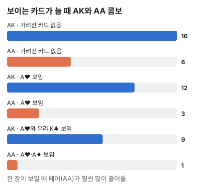

안녕하세요. B05에서 AK는 16콤보, AA는 6콤보라고 배웠죠. 그런데 그건 아무 카드도 안 보일 때 이야기예요.
보드나 우리 손에 카드가 보이면, 상대는 그 카드를 가질 수 없어요. 그래서 콤보가 줄어요. 상대 핸드를 콤보로 셀 때 이걸 빼먹으면 숫자가 통째로 틀어지죠. 오늘은 그 줄어드는 양을 직접 세고, 왜 어떤 핸드는 많이 줄고 어떤 핸드는 조금 주는지까지 따라가 볼게요.
이 글에서 배울 것
- 보이는 카드를 빼고 상대 핸드의 콤보를 다시 세는 법(다른 두 숫자는 곱셈, 페어는 두 장 고르기), 그리고 빼기로 세면 왜 틀리는지
- 카드 한 장이 보일 때 페어는 절반이 사라지고, 다른 두 숫자는 4분의 1만 사라지는 이유
- 그래서 보드에 A가 깔리면 상대가 들 "A가 든 핸드"끼리의 비율이 바뀐다는 것
1단계. 왜 줄어들까?
카드는 한 장씩만
카드는 덱에 한 장씩만 있어요. A♥가 보드에 깔려 있으면, 상대는 A♥를 들 수 없죠. 그래서 A♥가 들어간 조합은 모두 지워져요.
이걸 카드 제거라고 해요. 우리가 들고 있는 카드도 똑같이 지워요. 상대 입장에서는 보드든 우리 손이든 "이미 나간 카드"라는 점이 같으니까요.
자리가 정해진 극장표
비유하면 자리가 정해진 극장표예요. 우리가 이미 A열 3번 표를 들고 있으면, 다른 사람은 그 자리에 앉을 수 없죠. 상대가 앉을 수 있는 자리, 곧 상대가 가질 수 있는 조합이 그만큼 줄어요.
이게 무슨 뜻이냐면, 콤보 세기는 언제나 "지금 안 보이는 카드로 만들 수 있는 조합"을 세는 일이라는 거예요. B05의 16·6은 안 보이는 카드가 52장 전부일 때의 숫자였어요.
2단계. 다른 두 숫자(AK) — 곱셈으로
남은 장수끼리 곱하기
AK = 남은 A의 장수 × 남은 K의 장수예요. A 하나를 고르고, K 하나를 고르는 방법을 곱하는 거죠. 아무것도 안 보이면 4 × 4 = 16콤보.
| 보이는 카드 | 남은 A | 남은 K | AK 콤보 |
|---|---|---|---|
| 없음 | 4 | 4 | 16콤보 |
| 보드에 A♥ | 3 | 4 | 12콤보 |
| 보드에 A♥, 우리 손에 K♣ | 3 | 3 | 9콤보 |
보드 A 하나: 3 × 4 = 12, 거기에 우리 K 하나: 3 × 3 = 9
12콤보 속을 나눠 보면
보드에 A♥만 있을 때의 12콤보를 같은 무늬와 다른 무늬로 나눠 볼게요.
- AKs(같은 무늬): 원래 4콤보인데 A♥K♥가 사라져서 3콤보
- AKo(다른 무늬): 원래 12콤보인데 A♥가 들어간 A♥K♠·A♥K♦·A♥K♣ 세 개가 사라져서 9콤보
3 + 9 = 12, 표와 같죠. A♥ 한 장이 지운 조합 네 개 중 하나는 같은 무늬, 셋은 다른 무늬였어요.
16에서 9로, 왜 8개가 아니라 7개만 사라졌을까
여기에 계산기만 쓰면 못 보는 디테일이 하나 있어요. A♥는 AK 조합 4개를 지우고(A♥K♠·A♥K♥·A♥K♦·A♥K♣), 우리 손의 K♣도 AK 조합 4개를 지워요(A♠K♣·A♥K♣·A♦K♣·A♣K♣). 그러면 4 + 4 = 8개가 사라져야 할 것 같죠.
그런데 실제로는 16 − 9 = 7개만 사라졌어요. 두 목록을 잘 보면 A♥K♣가 양쪽에 다 들어 있어요. 한 조합을 두 번 지운 거라, 실제로 사라진 건 4 + 4 − 1 = 7개예요.
이게 무슨 뜻이냐면, "원래 콤보에서 지워진 걸 빼는" 방식은 겹친 조합 때문에 틀리기 쉽다는 거예요. 16 − 4 − 4 = 8로 세면 한 개가 모자라죠. 그래서 처음부터 남은 장수끼리 곱하는 게 안전해요. 곱셈은 남은 카드만 보니까 겹칠 일이 없어요.
3단계. 포켓페어(AA) — 남은 장수에서 두 장 고르기
실제로 나열해 보면
페어는 같은 숫자 중 두 장을 고르는 거예요. 보드에 A♥가 있으면 남은 A는 A♠ A♦ A♣ 3장이고, 그중 두 장을 고르는 방법은 이래요.
- A♠A♦
- A♠A♣
- A♦A♣
딱 3콤보예요. 원래 6콤보에서 절반이 사라졌죠.
공식으로는
남은 장수 × (남은 장수 − 1) ÷ 2예요. 첫 장을 고르는 방법이 남은 장수만큼, 둘째 장은 하나 적게, 그런데 A♠A♦와 A♦A♠는 같은 조합이라 2로 나눠요.
| 보이는 A | 남은 A | AA 콤보 |
|---|---|---|
| 0장 | 4 | 4 × 3 ÷ 2 = 6 |
| 1장 | 3 | 3 × 2 ÷ 2 = 3 |
| 2장 | 2 | 2 × 1 ÷ 2 = 1 |
여기서 "보이는 A"는 보드와 우리 손을 합친 장수예요. 보드에 두 장이든, 보드에 한 장 + 우리 손에 한 장이든, 남은 A가 2장이면 똑같이 1콤보예요. 더 빨리 세는 법은 I32에서 다뤄요.
4단계. 보드에 같은 숫자가 두 장이면
페어 보드 K♠K♥
보드에 K가 두 장 깔렸다고 해 볼게요. 상대가 K를 들고 있을 콤보는 얼마나 될까요?
- KK: 남은 K는 K♦·K♣ 2장 → 2 × 1 ÷ 2 = 1콤보
- AK: 남은 A 4장 × 남은 K 2장 = 8콤보
K가 두 장 보이면 K가 든 핸드가 크게 줄어요. 특히 KK는 단 한 콤보뿐이에요. 이때 상대 KK는 셋이 아니라 K 네 장, 포카드예요.
그래서 "보드 숫자의 셋은 3콤보"에는 조건이 붙어요
보드에 8이 한 장 깔리면 88은 3콤보라고 바로 말할 수 있어요. 단, 그 숫자가 보드에 한 장만 보이고 우리 손에 없을 때만이에요. 그 숫자가 보드에 두 장이거나 우리 손에 하나 더 있으면 남은 장수가 2장이라 1콤보로 줄어요.
이게 무슨 뜻이냐면, 페어 콤보는 "보드에 깔렸나"가 아니라 "그 숫자가 모두 몇 장 보이나"로 정해진다는 거예요.
왜 그럴까: 한 장이 몇 개의 조합에 들어 있나
페어가 더 많이 주는 이유
보드에 A 한 장이 보일 때, AA는 6에서 3으로 절반이 사라졌고 AK는 16에서 12로 4분의 1만 사라졌어요. 왜 이렇게 다를까요?
카드 한 장이 몇 개의 조합에 들어 있는지 세어 보면 보여요. 그 수는 그 카드의 짝이 될 수 있는 카드 장수와 같아요.
- AA에서 A♥의 짝이 될 수 있는 건 나머지 A 3장이에요. 그래서 A♥는 AA 조합 6개 중 3개(A♥A♠·A♥A♦·A♥A♣)에 들어 있어요. 6개 중 3개라 절반이 지워져요
- AK에서 A♥의 짝이 될 수 있는 건 K 4장이에요. 그래서 A♥는 AK 조합 16개 중 4개에만 들어 있어요. 16개 중 4개라 4분의 1이 지워져요
페어는 짝이 될 후보가 같은 숫자 3장뿐인데 전체 조합도 6개뿐이라, 한 장이 차지하는 비중이 커요. 다른 두 숫자는 전체 조합이 16개로 많아서 한 장의 비중이 작고요.
그래서 "상대가 A를 들었을 때"의 비율이 바뀌어요
이게 실전에서 왜 중요할까요? 아무것도 안 보일 때 AK : AA는 16 : 6이에요. 보드에 A가 깔리면 12 : 3이 되죠. AA에 비해 AK가 더 흔해진 거예요.
다만 콤보 수를 그대로 "상대가 그 핸드일 비율"로 읽으려면 전제가 하나 있어요. 두 핸드가 모두 상대 레인지에 있고, 이 판에서 같은 식으로 플레이된다는 거예요. 예를 들어 상대가 AA와 AK를 똑같이 프리플랍 레이즈하고, 이 보드에서 똑같이 벳한다고 가정하면, 상대가 강하게 나올 때 "AA로 셋을 맞췄나?"보다 "AK 같은 A 탑페어인가?"가 콤보로 네 배예요. 레인지 속 핸드마다 콤보 수로 무게를 주는 법은 I06에서 다뤄요.

자주 하는 실수
실수 1. "보드에 A가 깔렸으니 상대 AA가 많을 거야" 보드에 A♥ 한 장이 보이고 우리 손에 A가 없으면 AA는 3콤보, 같은 판의 AK는 12콤보예요. 셋이 될 수 있는 핸드라서 무섭게 느껴지지만, 같은 식으로 플레이된다면 수로는 AK가 네 배예요. 대신 셋이 떠오르면 "그 숫자가 지금 몇 장 보이나"부터 손가락으로 세어 봐요.
실수 2. 보드 카드만 빼고 우리 손 카드는 안 빼기 보드에 A♥, 우리 손에 K♣가 있는데 AK를 12콤보로 세는 실수예요. 우리 K도 상대가 가질 수 없으니 3 × 3 = 9콤보예요. 대신 곱하기 전에 숫자마다 남은 장수를 "A 3, K 3"처럼 먼저 적어 두고 곱해요.
실수 3. 페어 콤보를 "한 장 보일 때마다 같은 만큼" 줄이기 AA가 6 → 3이니 한 장 더 보이면 0이 될 거라고 생각하는 실수예요. 두 장 보이면 남은 두 장으로 만드는 조합 하나, 1콤보가 남아요. 4단계의 KK도 그랬죠. 대신 페어는 언제나 남은 장수 × (남은 장수 − 1) ÷ 2로 세요.
"보드 카드랑 우리 카드 말고, 다른 사람이 폴드한 카드는요?"
좋은 질문이에요. 다른 사람이 폴드한 카드는 우리가 볼 수 없으니 빼지 않아요. 우리가 확실히 아는 카드(우리 손 + 보드)만 빼는 게 원칙이에요.
무슨 카드인지 모르면, 그 카드는 덱 속 카드와 똑같이 "아직 안 보인 카드"예요. 혹시 실수로 폴드한 카드가 보였다면 그때는 빼도 되지만, 그건 정상적인 판에서는 생기지 않는 일이에요.
선생님의 한마디
상대가 강하게 나오면 이 순서로 세어 봐요.
- 보드와 우리 손, 두 곳의 카드를 먼저 지우기
- 떠오르는 무서운 핸드(셋·높은 페어)의 콤보 세기
- 같은 행동을 할 수 있는 덜 무서운 핸드의 콤보와 나란히 놓고, 몇 배인지 보기
연습 문제
학습툴 [콤보 분류 보기]는 준비 중이에요. 지금은 숫자마다 남은 장수를 직접 적어 보세요.
문제 1. 보드 A♥ 7♣ 2♦, Hero 손에 A♠ K♦. 상대가 크게 벳했어요. 상대의 AK와 AA는 각각 몇 콤보이고, 어느 쪽이 몇 배 많을까요?
정답 보기
- AK: 남은 A 2장(A♦·A♣) × 남은 K 3장 = 6콤보
- AA: 남은 A 2장 → 2 × 1 ÷ 2 = 1콤보
AK가 6배예요. 보드에 A만 있을 때(12 : 3, 네 배)보다 차이가 더 벌어졌죠. Hero의 A♠·K♦ 두 장이 AK를 절반으로 줄이는 동안(12 → 6), AA는 A♠ 한 장만으로 3분의 1이 됐어요(3 → 1). 페어는 같은 숫자가 한 장 더 보일 때마다 더 가파르게 줄어요.
문제 2. 보드 Q♥ J♥ 5♣, Hero 손에 Q♠ T♦. (가) 상대의 QJ 투페어는 몇 콤보이고, 그중 같은 무늬(QJs)는 몇 콤보? (나) 상대의 셋(QQ·JJ)은 모두 몇 콤보?
정답 보기
(가) 남은 Q는 Q♦·Q♣ 2장, 남은 J는 J♠·J♦·J♣ 3장 → 2 × 3 = 6콤보. 같은 무늬는 두 장이 둘 다 남아 있는 무늬만 돼요. 하트는 Q♥·J♥가 보드에, 스페이드는 Q♠가 Hero 손에 있어서 안 되고, Q♦J♦·Q♣J♣만 남아 2콤보(다른 무늬 4콤보)예요.
(나) QQ는 Q가 보드에 한 장, Hero 손에 한 장 보여서 남은 2장 → 1콤보. JJ는 J가 보드에 한 장만 보여서 남은 3장 → 3콤보. 합쳐서 1 + 3 = 4콤보.
투페어(6콤보)가 셋(4콤보)보다 많아요. 같은 보드인데 Hero의 Q♠ 때문에 QQ만 1콤보로 줄어든 게 핵심이에요.
문제 3. 보드에 Q♥, Hero 손에 A♠. 상대의 "AQ 또는 KQ"는 모두 몇 콤보? 둘 중 어느 쪽이 더 많을까요?
정답 보기
AQ = 남은 A 3장 × 남은 Q 3장 = 9, KQ = K 4장 × Q 3장 = 12 → 9 + 12 = 21콤보. Hero의 A♠가 AQ만 지워서, 원래는 같은 수였을 두 핸드 중 KQ가 더 많아졌어요. 우리 손의 카드가 상대 레인지의 모양을 바꾸는 거예요. 이걸 블로커라고 하는데, 고급 E01에서 본격적으로 배워요.
핵심 정리
- 상대는 우리 손 + 보드의 카드를 가질 수 없어요. 그 카드가 든 조합을 지우는 게 카드 제거예요
- 다른 두 숫자는 남은 장수끼리 곱하기, 페어는 남은 장수 × (남은 장수 − 1) ÷ 2. 원래 콤보에서 빼는 방식은 겹친 조합을 두 번 빼기 쉬워요
- 한 장이 든 조합 수는 그 카드의 짝이 될 수 있는 장수예요. 그래서 한 장이 보이면 페어는 절반, 다른 두 숫자는 4분의 1이 지워져요
- 보드 숫자와 같은 포켓페어는 그 숫자가 보드에 한 장만 보이고 우리 손에 없을 때 3콤보, 두 장 보이면(어디서든) 1콤보예요
- 콤보 비율을 "상대가 그 핸드일 비율"로 읽는 건 두 핸드가 같은 식으로 플레이된다는 가정 아래서예요
정리하며
오늘은 보이는 카드를 빼고 상대 핸드의 콤보를 다시 셌어요.
AK는 남은 장수끼리 곱해서 16 → 12 → 9로, AA는 두 장을 고르는 방법으로 6 → 3 → 1로 줄었죠. 같은 한 장인데 페어가 훨씬 많이 줄어든 건, 그 한 장이 페어 조합의 절반에 들어 있었기 때문이에요. 그래서 보드에 A가 깔리면 AK : AA 비율이 바뀌고, 셋은 생각보다 드문 핸드가 돼요.
다음 글 I08에서는 다시 한 판의 스팟으로 돌아가요. 오늘은 상대 카드를 셌다면, 이번엔 우리를 살릴 카드를 세요. 턴에 거트샷을 들고 팟벳을 맞았을 때, 아웃츠로 콜할지 따져 봐요.
AI 작성 · 숫자는 계산 검증 (콤보는 실제 카드로 하나씩 셈)